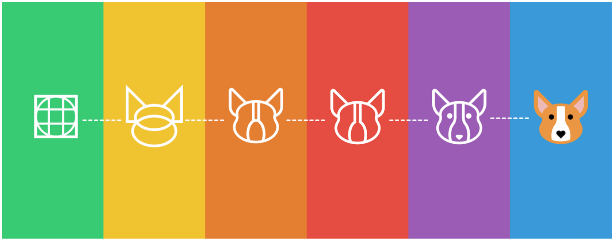

Icons are a way of communication and, due to their simplified
graphical form, they may even be the only language around that
everybody understands. Since they are shapes, uniformed shapes are
visually more appealing and easier to digest. They help users focus on
the artwork. They fix alignment issues caused by random open space to
better present surrounding information. Lets look at the
specifications.
Expression :
Icons play a role in how we think and what we want.
Grid :
It contains a basic guides to create an underlying form.
Shape :
Circle, square, and triangle — create a visually stable foundation
for icon designs.
Size :
Matters a lot! make sure you offer desirable size to make a clean
design.
Color :
Select the right color keeping in mind the theme of your icons and
the whole design
Use :
To represent ideas, objects, or actions.
Not Use :
See, many a times in the battle of clarity between icons and labels,
labels win. Labels almost always win. “When in doubt, always
remember this: the best icon is a text label.” User’s understanding
of an icon is based on experience. Text labels are perhaps necessary
to communicate the meaning and reduce ambiguity.
Tooltip :
Tooltips can be attached to any active element (icons, text links,
buttons, etc.) on a page. Tooltips are best when they provide
additional explanation for a form field unfamiliar to some users or
reasoning for what may seem like an unusual request.
Accessibility :
While the seemingly popular aria-label is a perfectly valid way to
add an accessible name to a button, it is certainly not the only
way, let alone the best. You could always just put text in it, for
example.
